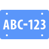

牌照違規速查
◎ 號牌（A）狀態：
◎ 車體（B）狀態：
◎ 比對A/B車籍：
◎ 行駛 / 停車：
◎ 號牌（A）違規項目：
◎ 車體（B）違規項目一：
◎ 車體（B）違規項目二 :
※ 註釋：
◎ 一、處罰對象
(1) 處罰條例12條原則處罰所有人。
(2) 車主死亡、主體不存在、死亡逕註、無車籍等，歸責駕駛人/繼承人/實際所有人。
(3) 拒不過戶註銷，函詢監理站查應歸責人。
◎ 二、有關「停車」狀態，車體除舉發12.4外，是否一併舉發12.1各款尚有疑義，請徑洽該管監理/裁決單位。
◎ 三、若發現懸掛「吊扣期間」之號牌，請詳查是否為偽/變造；處置方式請參考「偽造號牌之舉發及偵辦」一文
◎ 四、拼裝車及未審驗合格認定，請參考「未懸掛號牌之舉發」一文前段。